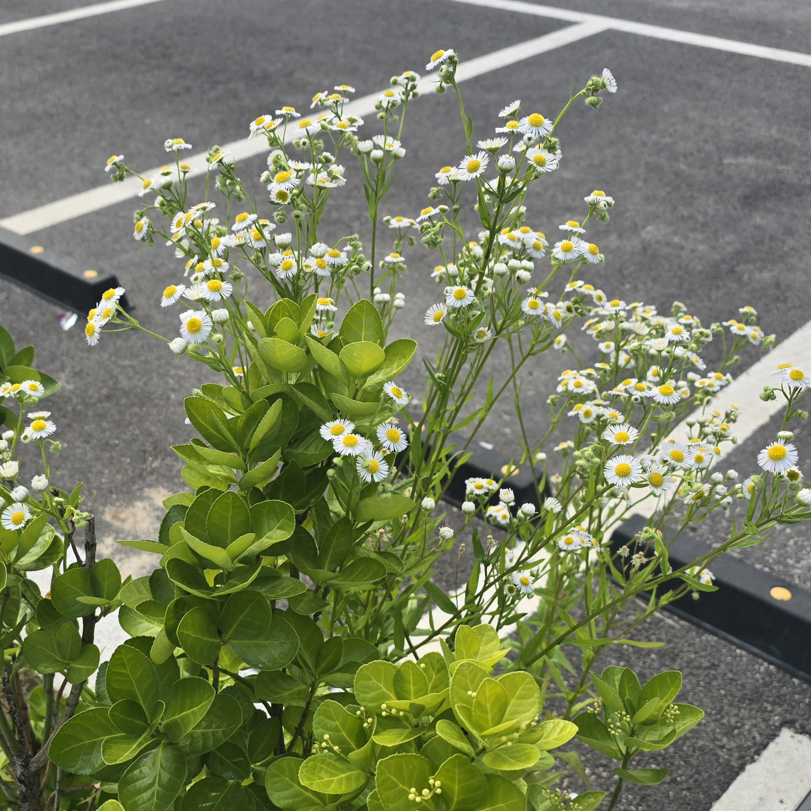

개망초

-개망초
개망초(학명: Erigeron annuus)는 북아메리카 원산의 국화과 두해살이풀로, 우리 주변의 길가나 빈터에서 흔히 볼 수 있는 귀화식물입니다. 여름철에 계란프라이를 닮은 작고 귀여운 흰색 꽃을 피워 '계란꽃'이라는 별명으로도 잘 알려져 있습니다. 생명력이 매우 강해 척박한 땅에서도 잘 자라며, 어린순은 나물로 먹기도 합니다.
돌아가기